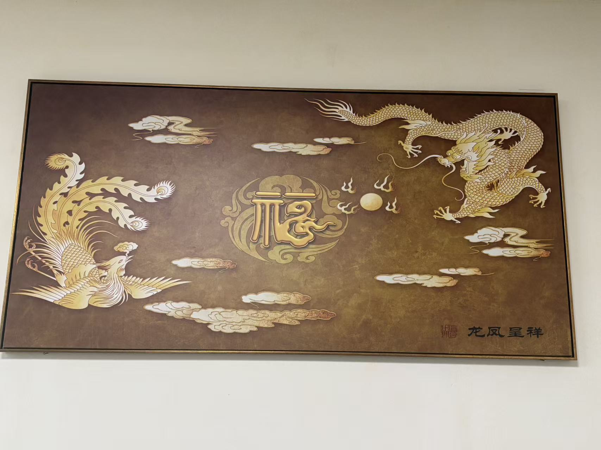

20260630谢芳玲师姐 龙凤呈祥
原始对话记录
以下为编者整理的主题文章
编者整理 · 主题文章
一张叫作龙凤呈祥的图
导读：原页只留了一张图，没有文字。标题写着谢芳玲师姐、龙凤呈祥。这里说说"龙凤呈祥"这四个字在民俗里的位置，以及这类图片通常为什么被留下。
打开这一页，只有一张图。
没有别的话。标题是：谢芳玲师姐，龙凤呈祥。
就这些。
"龙凤呈祥"是个老题目。龙和凤画在一起。龙主阳，凤主阴。一个主贵，一个主美。旧时婚娶、寿诞、年节，都爱用它讨口彩。剪纸上有，刺绣上有，瓷器上、年画上、殿堂的帐幔幡旗上也有。
在这样的语境里，一张龙凤呈祥的图，多半不是挂在墙上的画。可能是一张供品的留影，可能是一面旗，也可能只是手机里随手存下的一张样图。图没说话，就不好猜。
同一批记录里，前后几天多是这样的页。中元前后，法事、供品、图片。有的页只有一段视频，有的页只有一张照片。文字很省。像是把一天里看见的东西存下来，留着以后对。
谢芳玲师姐是谁，这一页没说。图里是谁，也没说。是画的，是绣的，是纸扎上的，也看不出。
只剩四个字。龙凤呈祥。
说明与免责：本站为民间修炼、民俗文化与传统文化资料的整理与记录，内容源自传承者口传与个人修习体会，仅供文化交流与研究参考，不构成医疗、健康、投资或任何功效承诺。所述内容属传统术数范畴，请理性看待；如身体不适，请及时就医。请遵守法律法规与公序良俗。